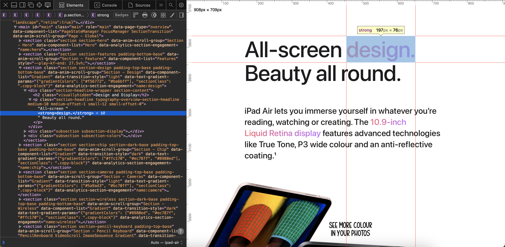
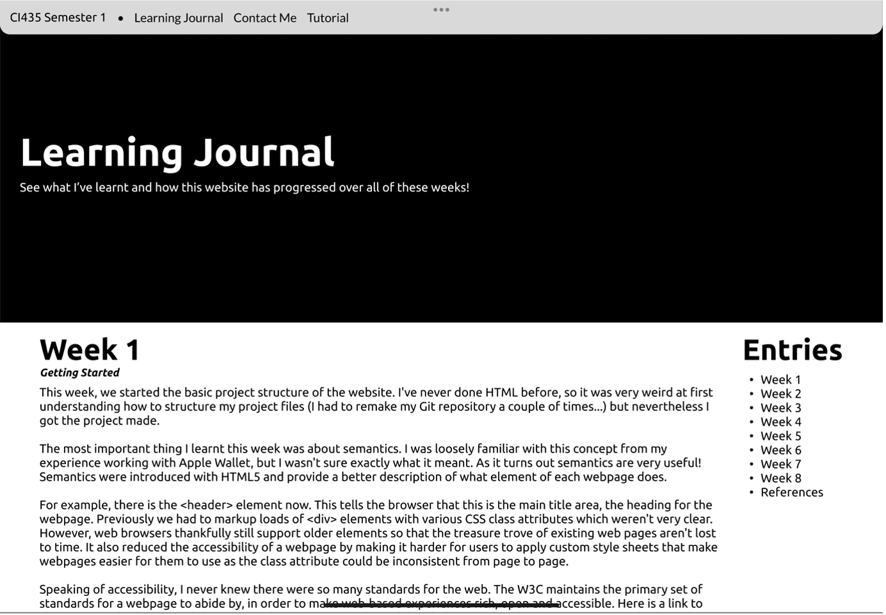
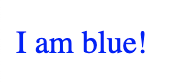
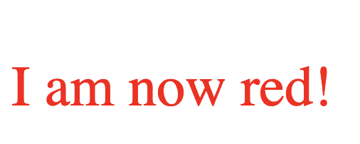
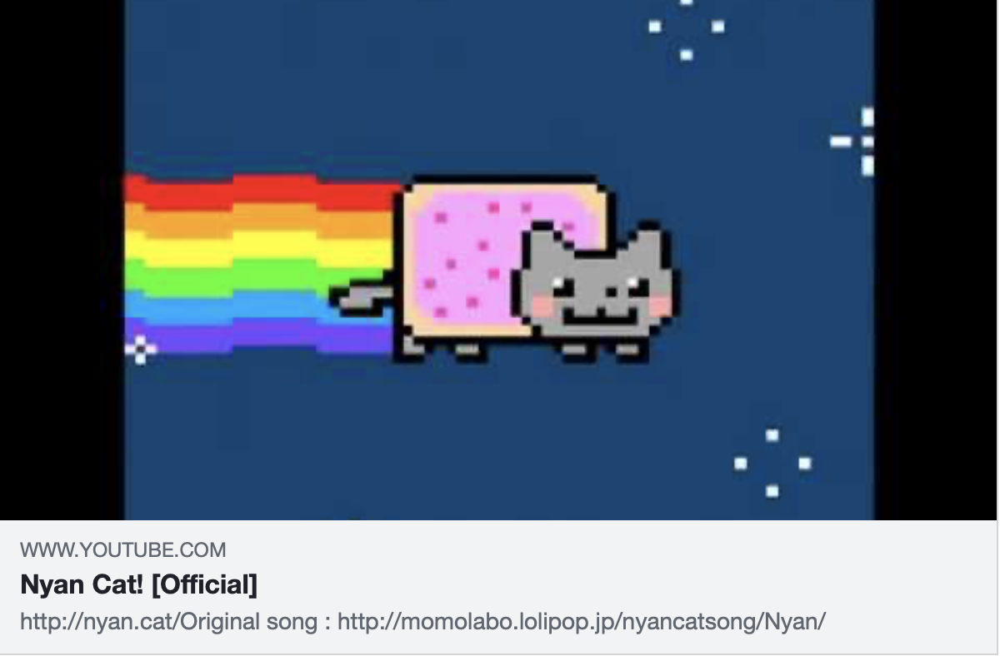
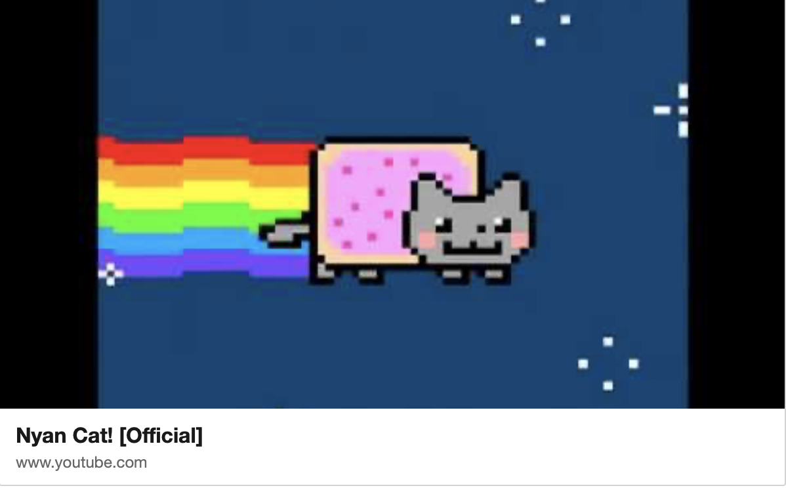

This week, we started the basic project structure of the website. I've never done HTML before,
so it was very weird at first understanding how to structure my project files but nevertheless
I got the project made and learnt about the very basics of web development.
Making the Web Pages
To get started, we were provided with a template HTML document to work with.
We were tasked with making 3 copies of this and naming them: index, contact and tutorial.
Each of these pages have different requirements that I need to implement.
I created my project locally in my IDE and decided to have the upload for when I was finished this week.
One requirement this week was to link all of these web pages together.
This is done via <a> elements, or anchor elements. Anchor elements take a href attribute that
tells web browser where to navigate to when the element is clicked. I initially wrote my elements as:
<a href=”/index.html”></a>
This worked perfectly locally as every webpage was beside each other in the directory.
However, when I uploaded these pages to Brighton Domains all the links broke.
This is because by adding the “/” to the start of the path, it pointed the browser to the root of the
website instead of the specific folder that I decided to store my project in. There was a very simple
fix for this. When removing the “/” it instructs to browser to locate a file with that name inside the
current directory, this would be the same as adding “./” to the start of the path.
Semantics
The most important thing I learnt this week was about semantics. I was loosely familiar with this
concept from my experience working with Apple Wallet, but I wasn't sure exactly what it meant. As it
turns out semantics are very useful! Semantics were introduced with HTML5 and provide a better
description of what element of each webpage does.
For example, there is the <header> element now. This tells the browser that this is the main
title area, the heading for the webpage. Previously we had to markup loads of <div> elements with
various CSS class attributes which weren't very clear. However, web browsers thankfully still
support older elements so that the treasure trove of existing web pages aren't lost to time. It also
reduced the accessibility of a webpage by making it harder for users to apply custom style sheets
that make webpages easier for them to use as the class attribute could be inconsistent from page to
page.
Accessibility
Speaking of accessibility, I never knew there were so many standards for the web. The W3C maintains
the primary set of standards for a webpage to abide by, to make web-based experiences rich, open and
accessible. These are known as the W3C standards.
Accessibility means a lot to many people, and I'm glad to see that there are various standards in
place to keep the web open and welcoming to everyone.
Additionally, the W3C provides a tool known as the W3C Markup
Validation Service that allows you to check if your website is W3C standards compliant. It is
something I will be using extensively during my projects development as I know it is important. Not
only for accessibility but also for CSS to function as expected.
Further Research
In previous projects I sometimes made changes to them that caused major components to break without
my knowledge and when I later went back to the system, I was unaware of the exact changes and so it
took quite some time to debug my problems and repair the system. I knew for this assessment that I
needed to change my workflow.
For this project I decided to integrate Git into my workflow.
Git is a version control system that allows you to take snapshots of your project so that you can
track, and rollback changes made to a project over time. It is used a lot in the industry and is also
very common amongst open-source developers. My IDE of choice for this project was WebStorm by IntelliJ which has very robust Git
integration alongside various automations that aid me in development. The initial commits of my
project were very messy as I was still trying to understand how to make a “good” commit but
eventually (after reinitialising the repository a lot) I made the repository clean, and I am now
keeping better track of my projects.
Additionally, I researched more into the capabilities of WebStorm. I found out that it has a built-in
SFTP client that allows me to interact with the web server and its contents without needing to leave
the IDE. It also has an automation that allows me to automatically upload the current commit of my
local repository to Brighton Domains without needing to log in or change the files directly. This has
already saved me a lot of time and means that I do not need to rely on a hosting service like GitHub
for storing my project.
To end off, I would like to keep a record of the visual progress of the website. Currently, all
webpages look nearly identical but over time as I learn CSS I hope for these pages to look amazing.
This week we learnt about how to use rich content to style our slight to make certain elements stand
out and add some visually appealing content including images and lists.
Navigation Menu
This week I added a navigation menu for the website which should suffice until I have finalised my
website’s design. To create a navigation element for the website I needed to use a <nav> element.
On top of meeting the criteria and needs of HTML5, the nav element is used by browsers to determine
if the navigation bar should be displayed at all or if the navigation elements should only be
provided on demand as described in the Mozilla web docs for the nav
element. This is done for users with various accessibility settings active so that their
accessibility software doesn’t unnecessarily read out navigation elements or focus the navigation
menu when there are better ways of accessing this content for users with different needs e.g. Rotor navigation.
For each entry I then added an anchor element, each one set with a unique id attribute. This id
attribute allows the HTML to uniquely identify an element and allows us to perform operations on it.
For example, we could style an element with a specific id or in my case we can reference the anchor
with another anchor via it's id like:
<a href=”#entry-week1”></a>
Where "entry-week1" is an id. The # symbol tells the browser to look for an element with that id on
the page and to navigate to it when the anchor is clicked. I have used this extensively in the new
navigation menu.
Currently, this navigation menu is built using the new list elements we learnt. <ul> and
<ul>. ul stands for unordered list. Meaning that each element inside the list has a standard
bullet point beside it as there is no important order. ol stands for ordered list. Each element will
have a number beside it, the number representing its position in the list. I have gone with an
unordered list as I do not need numbers on top of the week numbers.
Rich Content
Whilst I have outlined the basics above there are better ways to display content in a more
visual/rich manner. This can be done by styling the text. This can be done via <strong> and
<em>. The strong element wraps around a piece of text and by default gives it a bold
appearance. The em element or the emphasis element also wraps around a piece of text and
by default gives it an italic appearance. However, you can style both elements if you wish
to change how this text is displayed. For example, Apple styles the strong element on their website
to make it multicoloured:

If you look in the inspector you can see that the word design is just a <strong>
element.
You can also embed images, which I have shown before via the snapshots.
These images are required to implement a “src” and “alt” attribute. The “src” attribute points to a
location of an image, this can either be hosted on the site itself or in an external url. The “alt”
attribute is used by assistive technologies to describe images even when the browser can’t load them
or if the user is using a screen reader.
To end off, I have changed the initial headings and added the navigation menu for each entry to the
learning journal. However, the rest of the pages remain unchanged. If you want to see what the site
looked like at week 2, I encourage you to look at the week 1 progress
snapshot.
This week we learnt how to make even richer content for our website and how to make browsers display
more information about our website in their UI with metadata.
Metadata
In the lecture we learnt about the <meta> element, specifically the viewport meta. Meta elements,
according to Mozilla, represents metadata information about a web page that cannot be displayed via
standard HTML elements e.g. the web page title displayed on this pages tab. The viewport meta element
allows the website to be displayed better on mobile because the width of the website is now laid out
based upon screen width which I have added this week. Additionally, we can set the title of a website
or images on it like the favicon (the small icon beside the title in the webpages tab). I have set
the title of all my pages but have omitted the favicon for now as I still need to make it.
Richer Content
We also learnt about more elements that are supposed to better structure our content. The first of
which is a description list. This list allows list elements to have a description attached to them. I
have used this later this week when I talk about the various websites used for design inspiration
for the final website.
Secondly, we have tables. A table can be very useful for structuring information that should be
compared or laid out in a structured way. We have been asked to add our timetables to our site. I
have added this to the “Contact Me” page in case you wish to see it. Currently, it doesn’t really look
like a table. There is no default styling for it so currently it looks very weird. I will fix this
when I implement CSS later. It took me longer than I would like to admit to understand how tables
work... I am much more familiar with Markdown tables, so I had to follow a guide from W3Schools.
The third element we learnt of was the <cite> element. This is designed for referencing or
citing a piece of work. By default, it displays its contents in italics. I currently have no use for
this element and so it has been omitted. Finally, we learnt about the <figure> element. This
element is designed to be used with images, tables and other elements that would benefit from an
additional explanation with a caption. I have updated all the current images in the website to
adopt the figure element.
Interactive Content
We also learnt that we could turn images into links, this can be done by adding a <img> element
into a <a> element. This doesn’t style the image in any way, but it does make it interactive and
clickable. For example, clicking on the image of the university below will take you to the University
of Brighton website.
This way the links on a website don’t stick out like a sore thumb in that bright blue colour. We can
present them very nicely without having to first style them.
Further Research
So far, I have been haphazardly adding these elements to my website but given that next week we are
starting HTML I thought it would be best to start designing what the final website should look like.
To do this I am going to be using a UI design tool known as Figma
. Figma was designed for making interactive prototypes of systems very quickly and easily. I have
previous experience in using Figma from designing my own apps as well as creating concept designs for
the University’s own apps (only for fun I’m afraid).
I started off by researching two different styles of websites. An article-based website, like how the
learning journal should look, and a more media focused site similar to an online store. My main
references were:
Apple is a hardware and software company specialising in consumer hardware e.g. phones.
The Verge is an article-based website that heavily included whitespace around the main body of text.
It also had what looked like many asides for ads, promoting other articles, adding additional context
and more. I used this site as the basis for my own article style and… well… it doesn’t look quite right:

A screenshot of a design wireframe for the learning journal that resembles an article based
website.
The main header for the learning journal either didn’t take up enough space or took up too much. The
“Entries” aside navigation also didn’t feel right. The articles were weirdly cropped off by it and
the aside wasn’t fully utilised which made the overall layout feel awkward.
My second attempt involved referencing the websites for Procreate and Apple. These sites have more
emphasis on media like photos, videos and animations to engage the reader. So, I decided to take some
design cues from them and develop a design that looks more vibrant and colourful:
To end off, I would like to illustrate the difference that has been made just by adding the viewport
modifier. As you can see the text looks narrower to match the phone width, the reason this displays
small still is due to the size of the screenshots on the page. Hopefully with a bit of CSS next week
this can be fixed!
(Due to how closely linked these weeks are and how small week 5 is on its own, I have combined week
4 and 5 into one entry.)
At long last. We have reached CSS. These weeks we learnt the basics of CSS, how they know to style
elements and how we link the files themselves to HTML. Additionally, we learnt about using fonts from
Google Fonts and how we can now style text using CSS.
CSS File Format
Cascading Style Sheet files or just CSS files, are used to declare how specific elements should be
styled on a linked HTML document. They can style: HTML elements, elements with a specific class
applied, elements with a specific id or elements that are contained within other elements e.g. only
styling <a> elements that are contained within a <li> element.
They are specified in the following ways:
div - Styles all <div> elements on a webpage
.wrapper - Styles all elements with the wrapper class applied
#unique - Styles the element that has “unique” as it’s id
div p - Styles all <p> elements that are contained within a <div> element
no matter how nested they are
There are many other variations, but these are the main 4 that developers use. With this in mind we
can move onto the properties.
Properties
There are a ton of properties which you can find on the Mozilla Web Docs that can be used each
affecting the way an element is displayed. Properties are declared like so:
p {
color: blue;
font-size: 16px;
}
This would produce the following result:

However, we can also override styles or cascade them. If we were to declare these styles in the same
file:
p {
color: blue;
font-size: 16px;
}
p {
color: red;
font-size: 2.5em;
}
That would produce the following result:

The second group of properties that we used for <p> override those of the first since they
conflict. This is useful for accessibility as it means we can provide default styling that can be
overridden for different needs.
Also notice how we declared that the font size is 2.5em. What is an em? The em is a relative
unit
of measurement in CSS. This means that instead of setting a fixed size for the font we can size the font
relative to something else. With em, it means we are calculating the font size based on the font size
of the current element. So, let’s say the current font size was 16px when we use 2.5em, we are asking
for the font size to be set to 2.5 x 16 which would be 40px. This is very good for responsive design
as we can assign a base font size for the document and have all other elements automatically adjust
their size accordingly.
Linking CSS
CSS has 3 ways of being implemented. You can implement it in the <head> of an HTML document via
the <style> element. You can also add CSS inline to an element using the style attribute which
all HTML elements have. Both methods are not recommended. Instead, it’s recommended to create a
separate CSS file that you can link inside the <head> using a <link> element like:
<link rel="stylesheet" href="styles.css">
This makes it easy to reuse styles. Additionally, it makes it possible to override styles stored in
another style sheet since the files also cascade each other. This is useful for normalizing the base
appearance of a website using something like normalize.css.
Google Fonts
A very common resource for development of all kinds is Google
Fonts. The font you use for a website or system helps define its personality and helps people
associate it with your brand. For example, think of Comic Sans which most people associate with
either Microsoft Word or Microsoft Paint.
Google Fonts contains many fonts which are all copyright free which makes them perfect to use in this
project. I was stuck between 3 main fonts:
Lato
Nunito
Ubuntu
Lato looked quite clean it looked like a standard font you would see in a lot of systems, but this
makes it appear more serious and I ended up not wanting to use it for that. Nunito has a much more
rounded look to it which makes it look very bubbly and fun but feels very childish which doesn’t
really fit for university work. Therefore, I ended up using Ubuntu as I really liked the curve all
the letters had whilst still having sharp edges. It’s a nice mix of Lato and Nunito so it’s a fun
font that still looks professional. (For those of you who couldn’t even tell I used different fonts I
am so sorry you had to read this)
To start using Ubuntu inside my CSS file I needed to add the following code to the top of the CSS file:
This tells the web browser to import the file add the specific URL. In this case, the font file
needed to display Ubuntu. I can then adjust my font by setting the font-family property on my elements:
font-family: 'Ubuntu', sans-serif;
And just like that, the website font is now Ubuntu. I opted to import the font in the CSS file
instead of the <head> like google suggested as it means that I don’t need to import the font each
time for each HTML file.
Further Research
So far I have showed having to manually adding each value that you want to set for every single
element. If you want to change the foreground colour of every element in a page, it’s easy to do the
first time as you need to write the CSS anyway. However, if you wanted to change this in the future
it would be very tedious. This is even harder to do if you maintain multiple CSS file like in a
larger website. This is what leads to some parts of a website looking older than others, it’s hard to
update the CSS values. An example of this is Google
Advanced Search. It uses an older version of Google's design language and has not been updated to
their modern design language like many of their other sites. To fix this we have variables.
Variables are declared like any other property, usually in the root
pseudo-element like:
:root {
--accent-color: blue;
}
This creates the variable and makes it available to all other elements in the style sheet. We can
then use it by using:
p {
color: var(--accent-color);
}
This means that now the strong element will be coloured blue, and if we ever want to update it in the
future, we can just change the variable value.
The benefit of this is that we can now easily maintain the website and keep it consistent across HTML
documents. It also means that when we need to adapt the website for different users, we can write
less code, and we only need to update the variables instead of cascading every element that needs
changed.
Progress Snapshot
These weeks I added the basic styling for the website as well as changed how the navigation menu
looks. I have decided to adopt best practices and design the website to be mobile first. Meaning that
the design for the website is made with a phone in mind and will be later adapted to the desktop as
shown previously. I have also replaced instances of code in the journal with the <code> element
so that they are displayed better.
This week we learnt how to adapt a website to accommodate different users’ needs and their
devices by using media queries. We also learnt how to finally adjust our images to fit within the
size of the web page and containing elements.
Media Queries
So far, the website has been developed using a mobile first approach. Meaning that the website is
built to accommodate mobile devices first, and it is later adapted to take advantage of the
capabilities of a desktop and similar devices e.g. large screens.
It has also so far been developed for users that do not have any additional needs such as
assistive technologies for those visually impaired.
To accommodate both needs we can use media queries. Media queries allow CSS rules to cascade each
other based on information provided by the browser. This information can include properties about
the device such as screen size or browser user agent, the type of device or properties that the
browser provides on behalf of the user. These properties normally include accessibility
information of various types. Mozilla has an excellent guide for accessibility. This guide
includes many different media queries that can be used, but it is quite extensive. I will be
implementing the various media queries as I come across parts of the site that need to have
alternative considerations. So far, I have determined that I will need ‘prefers-reduced-motion’
and ‘prefers-reduced-transparency’ due to the intended design of my website.
Flexible Images
Another issue with the site is the images. Currently, they extend beyond the borders of the site.
On desktop, they don’t fit perfectly inside the wrapper, whilst on mobile the images stretch
beyond the body of text and cause the dreaded horizontal scroll to occur. To fix this we can use
CSS. There is a property called ‘max-width’. According to Mozilla there is no max width by
default. To keep the image responsive, I am using the relative unit of 100%. Whilst at first it
seems like the image might be restricted to 100% of the screen width it is actually restricted to
100% of its parent therefore the width of the image is automatically restricted to the width of
the wrapper.
Progress Snapshot
To end off, the site has now been adjusted to run well on the desktop like previously designed.
This week we learnt about making images and videos more flexible and presenting them in different
ways, including beside text by making them float. We also learnt a little bit about optimising
media for the web and how to use CSS to replace certain types of backgrounds. We also learnt
about making website favicons.
Flexible Images
To start, HTML and CSS have many different ways of manipulating images. To start with there is
the background-image CSS property. This allows the background of an element to be set
to an image. This image is excluded from assistive technologies and also is not rendered in views
like reader mode which makes it excellent for styling content, but it takes up additional space
and bandwidth which is not ideal for some scenarios. CSS backgrounds later on can fix this.
Additionally, it is possible to clip an image. When a size is applied to an image using the HTML
width and height attributes, we can store the image inside a <div> with a CSS class that
has the property overflow: hidden. This causes the browser rendering the content to
clip the div so that only the parts of the image that can fit inside the <div> are shown.
Floating Elements
On top of making the size of images flexible we can also make them float. Floating content means
that other content can wrap around it. This is useful for images as it means that we can display
relevant text beside images, and they do not take up the entire width of their parent.
Content can be floated using the CSS float property, that takes a direction that
determines how floated content should be aligned. This must annoyingly be explicitly cleared so
that the rest of the content body can return to its natural flow. To clear it, the CSS
clear property must be specified. It is easiest to use clear: both
but it is also possible to clear a specific direction.
Optimising Content
With all of these images it is important to consider how all of this content reaches the users
browser. Everytime your browser has to load this web page, it also has to load every single image
and asset on it as well.
Some people are in regions where their internet is incredibly slow when compared to other areas.
Some sites do not accommodate these regions and therefore people in those regions are unable to
use the website. This is especially true for websites that are rich in media like YouTube or
websites that use real-time data for communication.
To fix this, websites need to optimise their content for the web. There are 2 mains ways to do this:
Reducing asset size
Using lazy loading
Reducing asset size means that a PC doesn't need to fetch as much information from the internet.
This can be done by reducing image resolution or quality. This can also be achieved by stripping
out unnecessary data such as depth or transparency information, which would normally be captured
by software and cameras.
The majority of my previous images were not optimised in this way as I did not think of people
with poor internet initially. I only experience the issue of slow internet when attempting to
access the site on a train which, as you could imagine, has pretty bad internet. My images and
resources are now optimised for the web.
There are also "next-gen" image formats that can be used on some devices and browsers that allow
for very fast loading and high compression whilst keeping images looking nice. The two main ones
are AVIF and WebP. Whilst these formats are great, browsers
are only starting to support them now meaning that people using older, out-of-date devices, are
unable to see this content. Because of that reason I have opted to not use these new formats.
Lazy loading is the process of delaying when a browser loads something until it is needed. For
example, this demo site from Web.Dev
has a list of cat images that is shows. This list of images is lazily loaded so that each cat
image is loaded on demand when your browser needs to present it.
This leads to significant performance improvements and also uses less bandwidth allowing people on
poorer connections to load websites quickly. Where possible, I have implemented lazy loading.
CSS Backgrounds
Earlier I discussed the background-image CSS property. I said that whilst this is a
great property, in a number of scenarios it is unnecessary to use an image. This is because
backgrounds can be made in realtime using CSS which is much more efficient and uses less
bandwidth, and it still has all the benefits of background-image.
A great resource I used was a great web blog about advanced CSS effects. This blog
described how to achieve various effects in CSS. It also contained a number of free-to-use pre-made
backgrounds, I have chosen to use them for each web page and they look excellent.
Website Favicons
Did you know that the little icon beside the title of a tab on your browser is called a favicon?
According to Wikipedia, the name is derived
from favourite icon. The reason for that is because favicons were introduced in an early version
of Internet Explorer as a way for users to quickly and visually identify that they had added to
their favourites bar.
Now, the favicon has many roles which you can read on this great article on Medium.
To make a favicon, the file needs to be either an ICO, PNG, JPG or GIF. Once it has been created,
it can be linked to a website using:
While a favicon can be displayed in the tab bar a website has more opportunities and place it can
display icons and other branding. The main way to do this is social media previews.
Social media previews are when a social media website like X, Facebook or any other site
generating a preview take content from your website to present them nicely and in theme for their
website. Take the following examples based on the famous Nyan Cat video.

Facebook

LinkedInX
The main way to affect how these are generated is by implementing the Open Graph Protocol. This protocol allows websites to display
information in other websites in a way that looks visually appealing. The protocol has 3 main
properties that are used:
og:title
The title is shown in place of your websites title. This can be different from the websites
title and even be localised.
og:description
The description gives a brief overview of your website and is displayed just below the title.
og:image
The image should point to an image URL or a JavaScript function that can generate images.
This is displayed prominently beside the rest of the site's information. It is recommended to
be 1200px x 630px or in a 1.91:1 aspect ratio.
I have adopted title, description, locale and type and I aim to adopt image later on as well.
Progress Snapshot
This week, I have adjusted the site’s background and much of the layout. Most notably the layout
of images and the surrounding text. In future weeks, I am to refine these layouts further and
give each page a distinct background.
This week we learnt about some additional types of layouts including flexbox and multi-column
layouts. We also learnt about different ways to position an element.
Flexbox
Flexbox like it sounds, is a more flexible layout for HTML elements. Flexbox elements can arrange
themselves and their child elements in various ways, allowing them to resize or shrink themselves so
that they can fit in allocated space or expand to fill space.
Flexbox is used by many websites as it makes it easier to develop responsive webpages. The browser itself is now responsible for handling the responsiveness of the webpage, not the CSS or the developer.
Flexbox can be configured by a variety of flex properties. The main one just being flex. Flex is just a shorthand property for flex-grow, flex-shrink and flex-basis. The three properties are determined by how many values there are in the flex property. So let me explain each property.
Flex-grow determines how each flex item in a container grows when there is extra space unoccupied by elements. This value is relative, meaning that the browser calculates how to allocate space based on this value. So if a flex item has a value of 1, and another has a value of 2. The one with the value of 2 will grow twice as much as the other flex item.
Flex-shrink has the opposite effect. It determines how much an element should shrink by if the parent container is smaller than the size of the flex items combined. It is also a relative value.
Flex-basis determines the initial main size of the flex item. The default value is auto meaning that the flex item will only take up it’s original space. But it is also possible to set measurements. For example, setting a value of 200px means that the flex item will take up 200px of space but shrink as needed to fill the available space.
Multi-Column
Multi-column is an easy way to layout content neatly in columns and its easy to modify using CSS media queries. In CSS all you need to set is column-count to have the child elements of an element be laid out in multiple columns. For larger screens, this can be set to 2 columns and on mobile, just 1 so it displays as normal. This is excellent for web pages with a lot of text like a research report or journal entry.
It is also possible to set an element to span specific columns or all of them. For example, you wouldn't want the header of an article to only display on one column. So, you could set column-span to all. This would tell the browser that this element should take up the width of all columns in its parent.
Positioning
We also learnt about various ways of achieved specific positioning. The two most common ones are fixed and sticky.
Fixed positioning tells the browser that regardless of where an element lives in the DOM, display it at the set specific position. I found that this worked best for persistently floating elements on a page, especially for mobile. Therefore, I chose to use this for the “Go to top” button in the bottom right of my website on mobile. This was done by settings the position to be fixed and specifying the bottom and right properties. These properties (as well as top and left) are used to affect element positions. In fixed positioning, it tells the browser how to position an element relative to an edge. So for my button I set the following:
bottom: 16px;
right: 16px;
This tells the browser to position the button at the bottom right of the webpage always, but padded in by 16px. The value of 16px is fixed as the Apple Human Interface Guidelines for layout specify that the margin for a scrolling body should be 16px on the left and right edges. I carried this forward to the bottom as well so that the button didn't make contact with the browser and system UI.
Sticky positioning tells the browser to keep an element in its original position, but when the element would normally go off-screen it should be offset by a certain amount. I used this in my desktop layout for the top navigation bar. It sits in place normally but when it is about to go off-screen it is stuck to the top of the screen but offset by 16px this is controlled by the top property it is set to 16px again for the same reason.
Progress Snapshot
To end off, there are no notable changes for this week.
This week we learnt about HTML and CSS forms, how they work and the various elements that can be added to a form.
Forms
Everybody has seen a website form in some way or another. Forms are used for entering things like contact details, card information, messages or reviews. But all of them contain different elements and styles.
Forms are declared in HTML using the <form> attribute. This element contains a variety of input elements, I am going to highlight a couple of them.
The "text" type creates a single-line text field which the user can type into. By default, it has nothing in it but this can be changed using the placeholder attribute. It takes a string and allows for text to be shown when the text field is empty. There are also special types of "text" like "email" and "password" which take on special behaviours such as validation and character hiding.
The "button" type creates a clickable button, the configure its behaviour JavaScript can be added to the onclick attribute which will be run each time the button is clicked. Additionally, the text of the button can be changed by setting its value attribute.
There is a special variant of "button" called "submit" that automatically performs the action as declared on the form element. I will talk more about this action attribute later.
There are also some other elements that are useful in forms:
<label>
Creates a label for a given input element, identified by the input elements id.
<textarea>
Creates a multiline text field that can be resized.
<legend>
Groups a number of input elements together.
<fieldset>
Shows a label for a <fieldset> element.
Further Research
Like I talked about before, form elements have an action attribute. This attribute takes a URL that is called which is expected to handle the data of the form. How this action is used depends on the method attribute of the form. This method can be GET or POST and perform slightly different actions.
GET functions similarly to an SQL query. The URL of the action attribute is called, and the form data is appended to the end of it using URL query parameters. Each input is added to the URL using its “id” attribute and its stored value. For example, a username of test may be fetched from a URL like so:
https://example.com?username=test
The action URL is then expected to return the relevant data, in this case that could be the information of the user who has that username.
POST is used to send data to the action URL which is expected to do some processing with that data and then return the result of that processing. Instead of adding URL query parameters to the action URL, an HTTP network request is sent to the action URL and the request body of that request contains the URL query parameters. If we use the same example as before, the following network request would be sent:
POST / HTTP/2.0
Host: example.com
Content-Type: application/x-www-form-urlencoded
Content-Length: 13
username=test
A response would then be expected with some relevant data.
Progress Snapshot
To end off, the Contact Me section of the website has now been fully implemented.